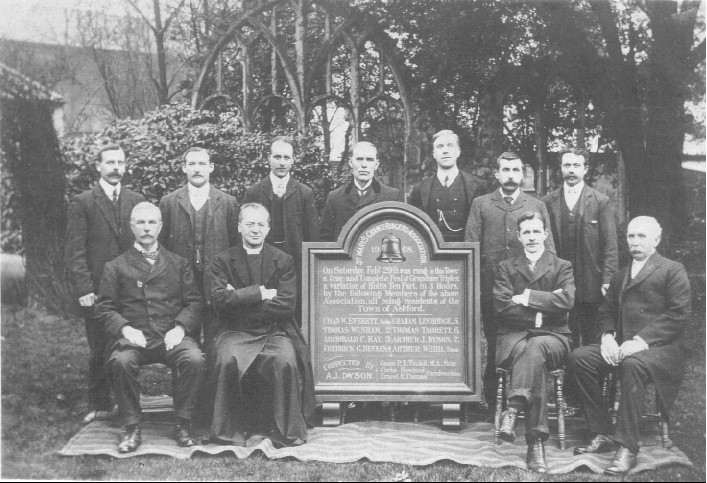

The Former Parish & Collegiate Church of St. Mary the Virgin, Ashford
(Now St Mary's Arts Centre)
 Details of the Bells
Details of the Bells
| Treble | 4-2-12 | G | 1970 | Whitechapel |
| 2 | 4-3-26 | F | 1965 | Mears & Stainbank |
| 3 | 5-0-17 | E | 1762 | Lester & Pack |
| 4 | 6-1-0 | D | 1762 | Lester & Pack |
| 5 | 6-0-0 | C | 1620 | Joseph Hatch |
| 6 | 7-2-2 | B | 1651 | William Hatch |
| 7 | 9-1-17 | A | 1633 | Joseph Hatch |
| 8 | 12-1-14 | G | 1898 | John Taylor & Co. |
| 9 | 14-3-9 | F | 1620 | Joseph Hatch |
| Tenor | 21-2-22 | E flat | 1796 | Thomas Mears I |
| Semitone | 6-2-12 | 32" | 1885 | Gillet, Bland & Co. |
Sound Clips:
THE CARILLON (CURRENTLY BROKEN) PLAYING A TUNE AT 9AM ON A SUNDAY MORNING IN 2002
PART OF A QUARTER PEAL OF STEDMAN QUATORS TO BID FAREWELL TO CANON EVERETT, LAST VICAR OF ASHFORD
Ringing Times
| Practice: | Occasional Tuesdays 7:30pm |
| Sunday: | Occasionally 9:20 - 10:00am (Quarter Peals most Sunday Evenings; except 2nd) |
Tower Captain: Vacant
Secretary: Unknown
Members:
Christopher J. Cooper
Keith A. Osborne
Ian A Renyard
Phillip A. Renyard
Tower History
| 1470 | Tower Built. |
| 1552 | Records of a large ring of five and one smaller bell. |
| 1620 | Treble added and back three recast by Joseph Hatch of Ulcombe. |
| 1633 | Third recast by Joseph Hatch of Ulcombe. |
| 1651 | Second recast by Joseph Hatch of Ulcombe. |
| 1762 | Two trebles added by Lester & Pack to form the ring of eight. |
| 1763 |
Bells rededicated on Monday 14th
March. During a piece of ringing on the opening day, the clapper
came out of the three and was not found until 1965 when the restoration
was completed. The first peal on the 8 bells was rung by the
Leeds Youths on Tuesday 15th March - 5184 Oxford T.B.
Major.in 3 hours & 31 minutes. The Wye Youths rang a short bit 'but not very well'.
The first local band peal was rung in December 1763 and is shown below along with the other early peals by the local band.
 |
| 1796 | Tenor recast by Thomas Mears. Other early peals
  The grave of Ambrose Reeve in Ashford Church Yard. He was one of the original Ashford ringers following the augmentation to 8 (see peal boards above). |
| 1816 | A new Carillon was installed and set going on Tuesday 4th
June For many years, John
Laker was Tower Captain at Ashford He lived at Hempstead Terrace
pictured below - demolished to make way for the hated ring-road.  |
| 1878 | Reports of a crack in
the sixth.  Some of the Peals rung by the 19th Century band. The frame is actually a fire surround and mantelpiece from the Blue Line Lane Hotel which was in Blue Line Lane. The hotel was demolished long ago.  |
| 1885 | The old clock and carillon (being worn out, so it was said) were swept away, and were replaced by the current clock and carillon. The old clock had a very large and quaint wooden dial to the South only, whereas the new clock had faces to North and South, and the dials as can be seen today are that much smaller than the old wooden dial. In order that the National Anthem be correctly and loyally played on the carillon, two small bells (one inscribed J.P.A. - Canon Alcock's initials) were added to the ringing octave by Gillett & Co. (these bells were only for the use of the carillon) and the clock and carrillon were set going by the Vicar, Canon John Price Alcock, on Ascension Day 14th May. |
| 1898 | Canons removed, sixth recast and all rehung by John Taylor of Loughborough. |
| 1899 | Charles Walter Everett learnt to ring at Ashford. In 1959 a board was erected on the wall of Ashford tower (which is still there) recording his 60 years as a ringer at that tower. For much of that time he was the Tower Captain. He was also Master of the Romney Marsh & District Guild for very many years, and Percy Page (another Ashford ringer) was for many years Secretary of the RM & DG. |
| 1908 |
First peal by an entirely local band (all resident in Ashford). This peal board has hung on the tower wall ever since.

On February 29th 1908 in 3 hours, 5040 Grandsire Triples (Holts 10-part). T. Wenham(2) A.C. Kay(3) F.G. Beeken(4) A. Webb (Tenor) G. Lindridge(5) T. Tabrett (6) A.J. Dyson (7) Charles Howland (CW) Canon P.F. Tindall (Vicar) C.W. Everett (Treble) Ernest E. Thomas (CW)   |
| 1924 | Front seven rehung by Gillett & Johnston. |
| 1925 | Tenor rehung by Gillet & Johnston. |
| 1936 |
Picture of the local band
following a peal attempt; details are below the picture. C.W.
Everett Esq. was Captain.
 On May 11th 1936 in 3 hours and 4 minutes, 5040 Stedman Triples (Thurstans 4-part) Daniel Godden
(Tenor) Frank Conley (4) Thomas Tabrett
(2) Charles Crothall (Sacristan & Verger)
George Swaffer (5) John Parsons (3)
Percy Page (6)
Charles Walter Everett (7-Cond.) Rev.R.S.B.
Sinclair (Vicar) Mrs C.W. Everett (Treble)
|
| 1950 |  Charles Walter Everett, Captain of Ashford. Jan 1950. |
| 1965 | Small carillon bell recast. Ring of eight unfortunately tuned (although the tuning seems to have been successful) and rehung in a new metal ten-bell frame by Mears & Stainbank. |
| 1970 | Treble cast from redundant school bells by Whitechapel. Rev. D.L. Cawley has written an excellent article about this. Small carillon bell hung for full circle ringing to form the present ring of ten. N.B. Mr F.G. Huckstepp and others with the support of the Vicar (Canon Maurice Sharp) collected small chapel bells from all over the county in order to obtain enough metal to cast the treble (they were all stored in his living room!) |
| 2000 | M. Chittenden-Pile took the position of Master
of the tower and began to put the tower into traditional order.  Local band January 2002 following tower AGM. Last AGM at which the Vicar presided. C.J. Cooper Mrs I.B. Smith I.C. Moore I.A. Renyard M. Chittenden Pile (Capt.) Rev. Canon J.W. Everett (Vicar) Mr S. Milburn (Treas.) Miss S.E.G. Fletcher P.A. Renyard Miss M.M. Jones [Senior member] (Sec.) |
| 2000 - 2005 | An
excellent local band
(with assistance of the Leeds Youths and RM & DG) ensured the bells
were rung well twice on Sundays, with Quarter Peals in various methods
performed on Sunday Evening for Evensong. Sept 2002: Canon J.W. Everett retired, having been the last Vicar with the Freehold and Cure of Souls in the Parish. |
| 2003 | 2nd March: A Quarter Peal of 1280 Oxford Treble-Bob Major was rung prior to Choral Evensong to commemorate the 240th Anniversary of the first peal (same method) on the 8 bells which was rung on Tuesday March 15th 1763 by the Leeds Youths. Members of the Ancient Society of Esquire Leeds Youths took part in this Quarter Peal. |
| 2004 |

 centenary service of the Highworth Girls Grammar School, Fri 2nd April 2004. S.J.O Head, M.P. Moreton, Mrs G.G. Pearson, Miss E.K. Davey, P.A. Renyard P.G. Parrott, C.J. Cooper (Conductor), Rev L.J. Hammond (formerly Curate here) |
| 2005 |
Mr
C. J. Cooper was excluded from the tower for objecting to the removal
of the pews and for his attitude toward those who exhibit a general disregard for the inherited tradition of the
building, and for circulating letters and other documents campaigining
against the destruction of furnishings, liturgy and doctrine.
 Ashford Ringers Christmas Dinner 2005
|
| 2009 | Finally after three and a
half years of an unofficial exclusion from the tower, Mr C.J. Cooper
was reinstated, and began to try and assist the new Captain rebuild a
large band worthy of being entrusted with the weighty task of ringing
the bells in this important famous and noble Ex-Collegiate Parish
Church. |
| 2010 | Following a long and unpleasant battle the church was closed from October 2010 until June 2011. It reopened (effectively) as an Arts Centre with only the Chancel still recognisable as a church interior. The church authorities had deliberately and maliciously either sold or cut up all the solid oak pews in the Nave. Only £2000 was raised from the sale of the pews; a disgraceful outcome. |
| 2012 | By God's good grace a small quantity of the old pews were recovered just before they were entirely destroyed. They are in secure storage awaiting restoration and subsequent application for Faculty to reinstate a central block of pews in the Nave. |